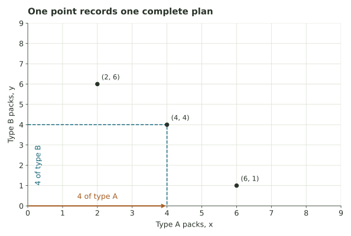
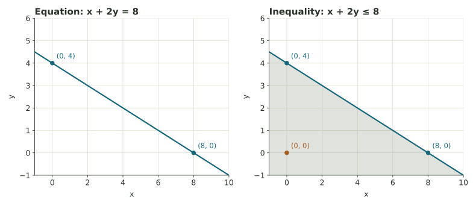
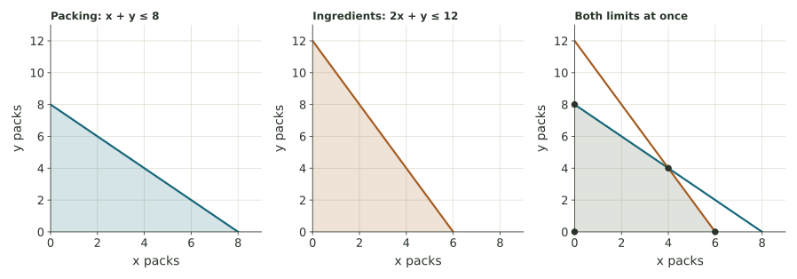
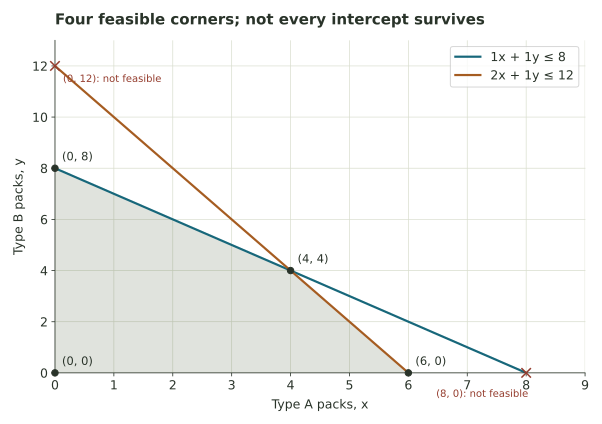
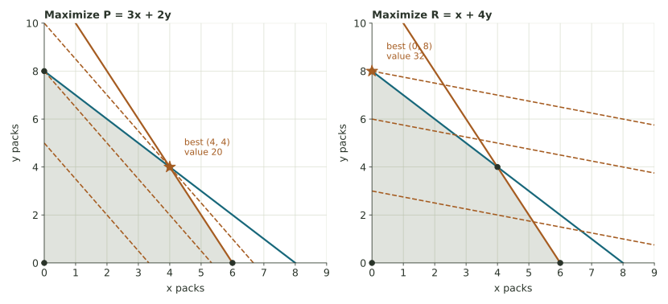
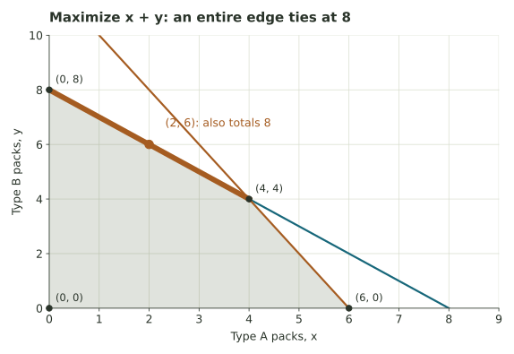
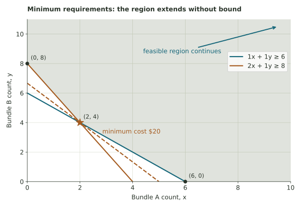
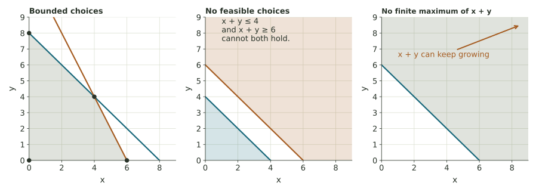
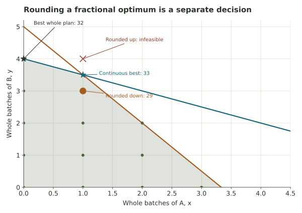

Feasible regions and optimization
Turn resource limits into a picture of possible plans, then use geometry to find the best one for a stated goal.
A production decision with resource limits
A school club is packing two kinds of snacks for an event. It has enough packaging for eight packs and a limited supply of ingredients. Type A uses twice as many ingredient portions as type B, but earns a larger contribution toward the fundraiser. How many of each type should the club make?
Week 7 gave us a way to compare costs, revenue, and profit. This week adds constraints: limits and requirements that a decision must satisfy. A plan with an attractive profit is useful only if the club can actually carry it out.
Let \(x\) and \(y\) be the numbers of two kinds of packs. Each resource limit becomes an inequality. The points satisfying all inequalities form the feasible region; a contribution function then gives a score to each possible plan.
The feasible-region explorer displays the overlap of resource constraints. The optimizer compares goals on that region. The printable chapters cover feasible geometry and optimization.
One point records one complete plan
Let \(x\) be the number of type-A snack packs and \(y\) the number of type-B packs. These are decision variables: quantities the club chooses. The plan \((4,4)\) means four of A and four of B. The first coordinate is always \(x\); the second is \(y\).
On the graph, move horizontally to the x-value, then vertically to the y-value. The point is a whole production plan, not a moment in time. The line between two plans will later represent mixtures or averages of those plans.

| Per pack or resource | Type A, x | Type B, y | Available |
|---|---|---|---|
| Packing slots | 1 | 1 | 8 slots |
| Ingredient portions | 2 | 1 | 12 portions |
| Fundraiser contribution | $3 | $2 | This is what we want to increase |
In this example, contribution means money remaining after per-pack costs. Subtracting the same fixed event fee from every plan changes profit totals but not which plan has the greatest contribution.
The drawing and the actual products
For the geometry, fractional pack quantities are initially allowed. Actual snack packs must be whole. A final decision must therefore satisfy both the resource constraints and the whole-number requirement.
What does (5,2) mean? What would (2,5) mean, and why is it a different decision?
Compare your reasoning
The first means 5 type-A packs and 2 type-B packs; the second means 2 of A and 5 of B. The products have different ingredient use and contributions, so exchanging the coordinates changes the plan.
Each constraint compares a total with a limit
Each pack uses one packing slot, so making \(x\) of A and \(y\) of B uses \(x+y\) slots. With at most eight available, the club needs \(x+y\leq8\). The symbol \(\leq\) means “less than or equal to”: using all eight is allowed, but using nine is not.
A type-A pack uses two ingredient portions and a type-B pack uses one. Their total use is \(2x+y\), giving \(2x+y\leq12\). The coefficient 2 means 2 portions per pack. Multiplying by \(x\) packs gives portions; both sides of this comparison have the same units.
The last two constraints forbid negative production. A plan is feasible if it satisfies every constraint. Every resource limit must be satisfied at the same time.
Example · Test (5,3) and (3,3)
At (5,3), packing uses \(5+3=8\) slots, which is allowed. Ingredients use \(2(5)+3=13\) portions, which exceeds 12. The plan is infeasible despite passing the packing test.
At (3,3), packing uses 6 and ingredients use 9; both coordinates are nonnegative. This plan is feasible. It leaves 2 packing slots and 3 ingredient portions unused. These unused amounts are called slack for the upper limits.
| Words | Mathematical form | Meaning |
|---|---|---|
| At most 8 | total ≤ 8 | 8 is allowed; larger totals are not |
| At least 8 | total ≥ 8 | 8 is allowed; smaller totals are not |
| Exactly 8 | total = 8 | Only 8 is allowed |
| Less than 8 | total < 8 | 8 itself is excluded |
A constraint is binding, or active, at a plan when it holds with equality. At (4,4), both resource limits bind: \(4+4=8\) and \(2(4)+4=12\). A binding constraint has no slack at that plan.
Does (6,1) satisfy the club’s full system? Show both resource calculations.
Compare your reasoning
Packing uses 6+1 = 7 ≤ 8, but ingredients use 2(6)+1 = 13 > 12. It is not feasible. A feasible plan must satisfy both resource limits.
The boundary is a line; the inequality permits a whole side
First consider a separate practice inequality, \(x+2y\leq8\). Its boundary line is \(x+2y=8\). An equality identifies the plans that use exactly the limit; the inequality also includes plans using less.
Example · Find two intercepts, then test one point
- Set \(y=0\): then \(x=8\), giving the x-intercept (8,0).
- Set \(x=0\): then \(2y=8\), so \(y=4\), giving the y-intercept (0,4).
- Draw the line through those points.
- Test a point off the line. At (0,0), \(0+2(0)=0\leq8\), so the side containing the origin is permitted.

For \(\leq\) or \(\geq\), draw the boundary as a solid line because equality is allowed. For a strict inequality, such as \(<\), use a dashed boundary to show exclusion. Our optimization examples use included boundaries. If the origin lies on the boundary, choose a different test point that does not.
In the club model, \(x\geq0\) and \(y\geq0\) restrict us to the first quadrant including its axes. This restriction does not make a single half-plane a bounded region on its own; we must inspect all the conditions together.
For x + 2y ≤ 8, is (2,3) on the boundary, strictly on the permitted side, or outside? What about (4,3)?
Compare your reasoning
At (2,3), 2+2(3)=8, so it is on the included boundary. At (4,3), the total is 10, so it is outside. An included boundary point is feasible for that inequality.
The feasible region is the overlap
Return to the club’s limits, \(x+y\leq8\) and \(2x+y\leq12\), with nonnegative coordinates. Each limit permits its own side of a boundary. The feasible region is their intersection: the points common to all the permitted sets.

A vertex (plural: vertices) is a corner of this region. Corners come from intersecting boundaries, including the axes. A boundary intersection is only a candidate vertex until we verify all constraints.
Example · Find the non-axis corner
Solve the two resource boundaries simultaneously:
\[x+y=8,\qquad 2x+y=12.\]
Subtract the first equation from the second: \((2x+y)-(x+y)=12-8\), so \(x=4\). Substitute into \(x+y=8\) to get \(y=4\). Thus the boundaries meet at (4,4). Both coordinates are nonnegative, so this intersection is feasible.
On the x-axis, \(y=0\). The limits require both \(x\leq8\) and \(x\leq6\), so the tighter upper limit is 6. The x-axis corner is (6,0). On the y-axis, the tighter limit is 8, giving (0,8). The origin is the fourth corner.

| Corner | Packing use x+y ≤ 8 | Ingredient use 2x+y ≤ 12 | Binding resource limits |
|---|---|---|---|
| (0,0) | 0 | 0 | Neither |
| (6,0) | 6 | 12 | Ingredients |
| (4,4) | 8 | 12 | Both |
| (0,8) | 8 | 8 | Packing |
The axes are also boundaries: at (6,0), for example, the nonnegativity condition \(y\geq0\) binds along with the ingredient limit. A corner does not always use up both resources.
For x+y≤7 and 2x+y≤10 with x,y≥0, find the intersection of the two non-axis boundaries. Is (7,0) a feasible corner?
Compare your reasoning
Subtracting gives x=3, then y=4, so the intersection is (3,4). The intercept (7,0) fails 2x+y≤10 because it uses 14. The feasible x-axis corner is (5,0).
Convexity means that the whole segment stays inside
A set is convex if the straight segment between any two points in the set remains entirely in the set. A filled triangle, filled rectangle, and filled disk are convex. A ring is not: a segment across the hole leaves the set. The circumference of a circle alone is also not convex; the disk includes the interior.

Example · Average two feasible plans
The halfway plan between (6,0) and (0,8) is \(((6+0)/2,(0+8)/2)=(3,4)\). It uses \(3+4=7\) packing slots and \(2(3)+4=10\) ingredient portions, both within the limits.
Why does averaging work for any two feasible real-valued plans? Each resource total at the average plan is the average of the two resource totals. If each total is at most a limit, their average is too. The same reasoning works for any mixture with nonnegative weights adding to 1.
Every half-plane is convex, and intersections of convex sets are convex. This explains the shape of our feasible region. A union is different: two separated filled rectangles are individually convex, but taking all points in either rectangle produces a set with a gap.
Whole-number plans are a separate issue: the halfway plan between (1,0) and (0,1) is (0.5,0.5), which is not a whole-number production plan. Convexity applies to the continuous region we drew, not to the isolated integer points within it.
Why is a filled rectangle convex while two separated filled rectangles, taken together, are not?
Compare your reasoning
A segment between any two points in one filled rectangle stays in that rectangle. With two separated rectangles, choose one point in each: the connecting segment crosses a gap outside their union.
An objective gives each plan a score
The club earns a $3 contribution from each type-A pack and $2 from each type-B pack. Its total contribution is
This is the objective function: a rule assigning a number to each plan. The letter P names the total contribution in dollars. To maximize it means to find the largest value among feasible plans.
Example · Feasible does not mean optimal
The feasible plan (3,3) gives \(P=3(3)+2(3)=15\) dollars. The feasible plan (4,4) gives \(P=3(4)+2(4)=20\) dollars. So (3,3) is possible but does not give the largest contribution.
The infeasible plan (5,3) would give $21. That larger score does not make it an allowable choice: it exceeds the ingredient supply. We optimize within the feasible region.
A function such as \(3x+2y\) is linear: each extra unit of x adds the same amount, and each extra unit of y adds the same amount. There is no product \(xy\), squared quantity, or changing rate. A linear program combines a linear objective with linear constraints. “Programming” here means planning or optimization; writing computer code is not required.
At (2,5), what is P=3x+2y? Does the value alone tell you the plan is feasible?
Compare your reasoning
P=3(2)+2(5)=16. The score alone does not prove feasibility; check the constraints. Here packing uses 7 and ingredients use 9, so the plan is feasible.
For this bounded polygon, compare the corners
Our continuous feasible region contains infinitely many points. The corner-point principle says that a linear objective on a nonempty, closed, bounded polygonal feasible region attains its maximum and minimum at vertices. “Bounded” means it fits inside some finite box. “Closed” here means the boundary is included.
This guarantees that at least one vertex gives the best value. It does not guarantee a unique best point, or say that every best point must be a vertex. Those distinctions matter when there is a tie.
| Feasible vertex | Calculation of P = 3x + 2y | Contribution |
|---|---|---|
| (0,0) | 3(0)+2(0) | $0 |
| (6,0) | 3(6)+2(0) | $18 |
| (4,4) | 3(4)+2(4) | $20 |
| (0,8) | 3(0)+2(8) | $16 |
The largest entry is $20 at (4,4). The recommendation is to make four of each type, with contribution $20. Report both the plan and its value; they answer different parts of the question.
Why a corner comparison can work
Any point in a filled convex polygon can be expressed as a mixture of its vertices. A linear objective at that point is the same mixture of the vertex scores. An average of scores cannot exceed the largest score or fall below the smallest. This is the geometric reason the table can locate an optimum.

In our model, the best plan is also a whole-number plan, so it remains optimal if we restrict production to whole packs. A continuous optimum is an upper bound for the integer choices; when a whole-number plan attains it, the integer problem is solved too.
Why is checking just the two axis corners insufficient?
Compare your reasoning
The best corner can occur where two non-axis boundaries meet. Here (4,4) gives $20, exceeding the $18 and $16 at the axis corners. The method requires every feasible vertex.
The feasible region stays; the goal can change
Suppose a new contribution schedule favors type B, with objective \(R=x+4y\). At the same four vertices its values are 0, 6, 20, and 32. Now (0,8) is best. The resource limits and region did not change. The objective changed.
Alternatively, suppose the club wants the largest number of packs, regardless of type. Maximize \(T=x+y\). The packing limit already tells us \(T\leq8\). Both (4,4) and (0,8) attain 8, and every point on the segment between them also attains 8.

Example · A tie leaves room for another consideration
Under the objective “make as many packs as possible,” (4,4) and (0,8) are equally good. Their ingredient use differs: 12 portions versus 8. If the club also wants to save ingredients among tied plans, it can choose (0,8). If it wants the larger contribution among those tied plans, it can choose (4,4).
A second goal can distinguish plans that tie under the first. We should name that goal rather than pretend the first objective made the whole decision.
If two adjacent feasible vertices both give the maximum score for a linear objective, what happens between them? Does the same conclusion follow merely because two vertices have equal scores?
Compare your reasoning
Every point on the edge joining two optimal adjacent vertices has the same maximum score. Equal scores alone do not establish optimality: some other vertex might score higher. First compare all feasible corners.
“At least” often reverses the feasible side
An invented supply order offers two bundles. Bundle A contains 1 notebook and 2 pencils and costs $4. Bundle B contains 1 notebook and 1 pencil and costs $3. We need at least 6 notebooks and at least 8 pencils. Let x and y be the respective bundle counts.
We can buy extra supplies, so there is no upper limit in this model. The feasible region extends up and to the right. It is unbounded, but that does not mean its minimum cost is missing.

| Boundary vertex | Notebooks | Pencils | Cost 4x+3y |
|---|---|---|---|
| (0,8) | 8 | 8 | $24 |
| (2,4) | 6 | 8 | $20 |
| (6,0) | 6 | 12 | $24 |
The minimum is $20 at 2 A-bundles and 4 B-bundles. For this nonnegative-variable model, the least cost occurs at a feasible vertex. On an unbounded region, we must also check whether some allowed direction keeps improving the objective. Here all costs are positive, so going farther out cannot make the cost decrease forever.
The origin has cost zero but violates the supply requirements. This is why minimizing cost cannot be separated from stating what must be provided. If the only restrictions were upper limits and nonnegativity, doing nothing could indeed be the mathematical minimum-cost plan.
Why is (0,6) not feasible for the supply order even though it provides all six notebooks?
Compare your reasoning
It supplies only 6 pencils, below the minimum 8. Both requirements must hold. A boundary intercept of one requirement may fail another.
A model can have a best plan, no plan, or no finite best value

- Infeasible model: no point satisfies every constraint. For example, \(x+y\leq4\) and \(x+y\geq6\) cannot both hold. There is no permissible plan to optimize.
- Unbounded objective: feasible plans exist, but their scores improve without limit. For example, maximizing \(x+y\) with only \(x+y\geq6\) and nonnegativity allows arbitrarily large totals.
- Finite optimum: some feasible plan attains the best value. It may be one point, an edge, or a larger set when scores tie.
The optimizer identifies these different outcomes. It computes vertices from the actual constraints; a corner of its graph window is not automatically a real feasible vertex.
Included boundaries matter too
With \(0\leq x<1\), there is no largest allowable x: any proposed x can be increased a little while staying below 1. The value 1 is a limiting bound, but it is excluded. Our corner method uses non-strict inequalities so the relevant boundaries are available.
Does an unbounded feasible region always imply that there is no minimum? Give an example from this reading.
Compare your reasoning
No. The supply-order region extends indefinitely, but positive costs give a minimum of $20 at (2,4). Unbounded choices and an unbounded objective are different properties.
A fractional optimum is a useful bound, not an automatic plan
Acres, mixture amounts, and hours can often be treated as divisible. Chairs, buses, and finished packs usually cannot. Requiring whole-number decisions adds an integer constraint. It changes which points are allowed, even when the drawn continuous region stays the same.
Example · Rounding can fail in two ways
Maximize \(S=5x+8y\) subject to \(x+2y\leq8\), \(3x+2y\leq10\), and nonnegativity. The continuous best point is (1,3.5), with score \(5(1)+8(3.5)=33\).
Rounding up to (1,4) violates both limits: the totals become 9 and 11. Rounding down to (1,3) is feasible but scores only 29. The whole-number plan (0,4) is feasible and scores 32, so rounding down missed a better plan.

To verify the integer optimum here, try y = 0, 1, 2, 3, 4. The largest allowable whole x-values are 3, 2, 2, 1, 0, giving respective scores 15, 18, 26, 29, 32. This finite check establishes the best whole plan.
What does the continuous maximum 33 establish about any feasible whole-number score in this example? Why does it not establish that 33 can be achieved with whole numbers?
Compare your reasoning
Every whole-number feasible plan is also continuously feasible, so its score is at most 33. But the point giving 33 has a fractional coordinate, so it does not establish an attainable whole-number score.
A convex combination is a weighted average of points
Weeks 2–3 used fractions, relative weights, and averages to summarize numbers. We can average points by averaging their coordinates. For points \(A=(2,1)\) and \(B=(8,5)\), use weights 0.75 and 0.25:
A convex combination uses nonnegative weights that add to 1. For two points, all these combinations fill the segment between them. For three noncollinear points, they fill the triangle. The smallest convex set containing the given points is their convex hull.

The AI application isolates one use of this idea: a normalized nonnegative weighted combination of value vectors in attention. The geometric guarantee concerns that one averaging step. Later transformations in a model need not stay in the original hull, and the weights do not certify that an interpretation is true.
Why do weights 0.6 and 0.4 define a convex combination, while 1.2 and −0.2 do not?
Compare your reasoning
The first pair is nonnegative and sums to 1. The second also sums to 1 but has a negative weight; it can extrapolate beyond the segment. Both conditions are needed.
A clear recommendation names its goal and assumptions
Linear models assume constant rates: every extra pack uses the same resource amounts and adds the same contribution. They may omit bulk discounts, setup time, uncertain demand, waste, changing prices, staffing constraints, or a minimum service requirement. The graph is the consequence of those modeling choices.
Increasing a resource allowance in a “≤” constraint expands the feasible set or leaves it unchanged. Therefore the best maximum score cannot decrease. But it need not improve: another resource may still block every better plan. Tightening a limit can shrink the set or even make it empty.
Example · More ingredients do not create more packing slots
Keep \(x+y\leq8\), but increase the ingredient allowance from 12 to 16. All eight packs can now be type A: (8,0) uses 8 slots and 16 portions and contributes $24. Increasing ingredients beyond 16 cannot improve this particular objective further while the eight-slot limit stays fixed: no pack contributes more than $3, so eight packs can contribute at most $24.
A practical routine
- Define the decision variables, units, and whether fractions are meaningful.
- Translate every resource limit and minimum requirement into a constraint.
- State the objective and whether to maximize or minimize it.
- Find all feasible vertices and check candidate intersections.
- Compare objective values and identify ties or improving directions.
- Check whole-number restrictions and interpret the plan and value.
- Name a missing feature and explain what information would improve the model.
Week 9 adds another reason a plan might be impossible: locations and resources must be connected by usable routes. Keep the same distinction there—what is allowed, what is preferred, and what the model leaves out.
Continue from geometry to a decision
The laboratory builds the core skills. The extension develops complete maximum and minimum problems. The workshop application asks for a production recommendation; the AI application makes convex mixtures visible. Use the discussion to test a classmate’s reasoning against the constraints.
The numerical scenarios are invented teaching examples. Optional AI background: Vaswani and colleagues, Attention Is All You Need, §3.2. The course activities require coordinate arithmetic, not the paper’s matrix machinery.